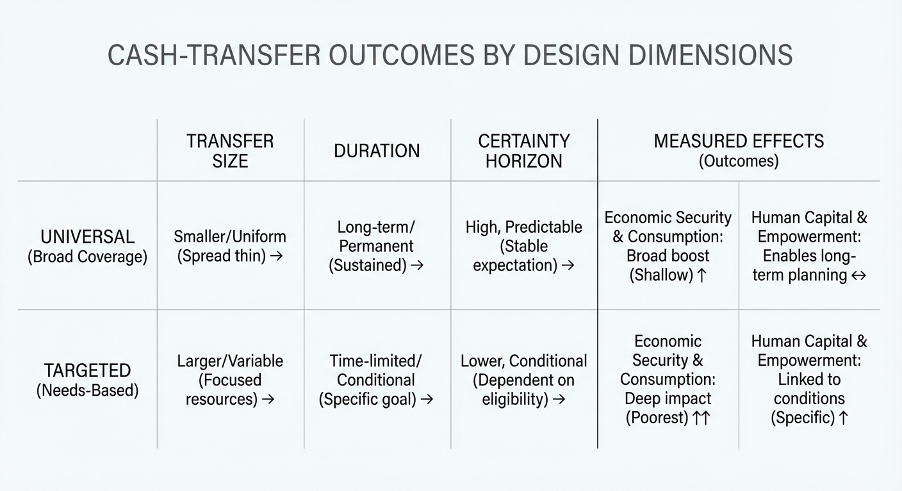
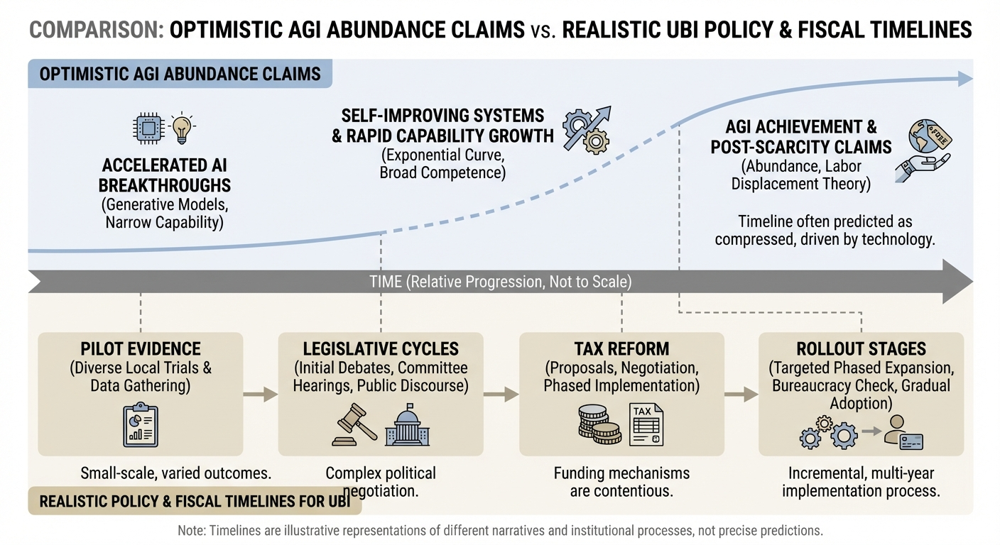
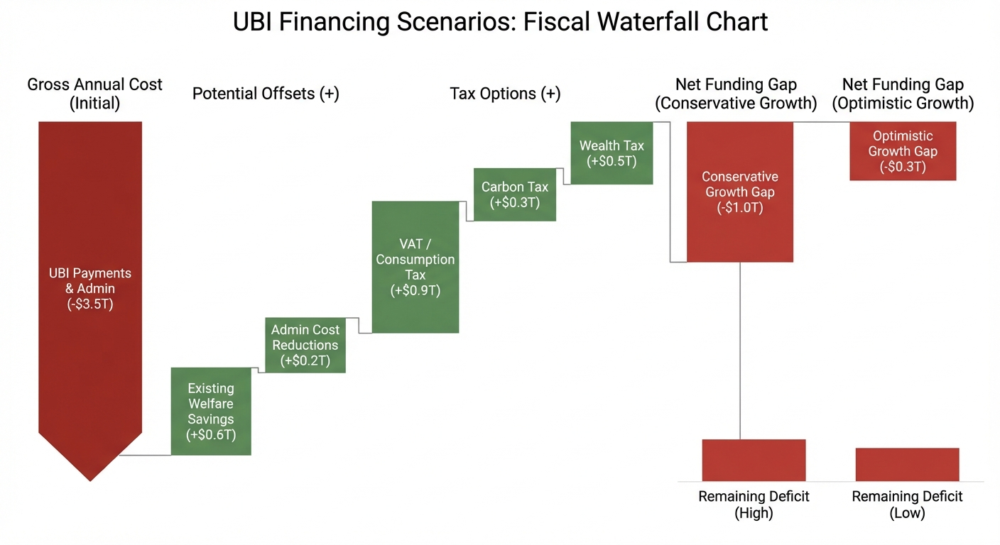

Realistic Projections on UBI (Universal Basic Income): Don’t Bet Your Future on It
Every new AGI headline seems to carry the same promise. Productivity will explode. Economic growth will surge. Wealth will expand so fast that governments can finally guarantee everyone a baseline income. That story is emotionally powerful because it offers a clean answer to a messy fear: what happens to workers when intelligent systems become better, cheaper, and more widely deployed than expected.
That is one reason UBI is suddenly back in fashion across podcasts, policy debates, startup circles, and mainstream politics. As automation anxiety rises, UBI is being reframed from utopian theory to practical shock absorber. If machines can do more of the work, maybe society can decouple survival from employment. It sounds plausible, and in some contexts, morally compelling.
But this is exactly where realism matters most. People are increasingly jumping from “AGI may boost growth” to “meaningful UBI is likely soon.” The evidence does not justify that jump yet. The strongest reading of current research is more grounded: unconditional cash can improve stability and well-being, but national UBI at adequate levels remains fiscally and politically hard, and likely slower than AI hype cycles. This article takes that evidence-first posture and breaks down what is real, what is overstated, and how to set expectations for the next 5, 10, and 20 years.
Why UBI Is Being Considered in the First Place
There are four structural reasons UBI keeps returning to the policy agenda. First, labor markets are increasingly polarized. High-skill jobs at the top and service jobs at the bottom grow, while many middle layers face compression. Second, social protection systems were mostly designed for stable full-time employment, but more people now work across part-time, gig, contract, and platform-mediated models. Third, economic shocks are frequent enough that even “doing everything right” no longer guarantees stability. Fourth, administrative complexity in means-tested programs can create delays, stigma, and benefit cliffs that penalize people as they try to climb back into work.
In that setting, UBI is attractive because it is simple. You do not need to prove poverty each month. You do not need to meet narrow category rules. You do not lose support exactly when you re-enter employment. You just receive a baseline transfer and then layer earnings on top. Advocates argue this reduces bureaucracy, increases dignity, and allows households to make better long-term decisions.
Even critics usually concede one point: the current patchwork in many countries is difficult to navigate and often fragile. Where they diverge is fiscal and behavioral realism. Can countries pay for meaningful UBI without cutting other core programs? If funded, does it reduce poverty more effectively than targeted supports? How much labor-supply response should governments expect? These are empirical questions, not vibe questions, and the pilot record helps answer part of them.
Start With Definitions or the Debate Falls Apart
A major source of confusion is that many “UBI” debates are actually about different policies. A strict UBI is universal, unconditional, individual, and ongoing. Many pilots are not universal, because they target a subgroup. Many are not permanent, because they last 1 to 3 years. Many are not “basic” in the literal sense, because the payment is too low to cover essential living costs. That does not make those pilots useless. It just means people should not over-generalize from them.
This distinction matters when someone says “UBI failed” or “UBI worked.” Usually what they mean is: a specific transfer size, paid to a specific group, in a specific place, for a specific duration, produced a specific pattern of results. Serious interpretation requires keeping all of that context attached to the claim.
The good news is we now have enough cross-country and cross-design evidence to identify broad patterns with more confidence than in 2016 or 2018. The bad news is the evidence does not support lazy conclusions on either side.
What Finland Actually Found, and Why People Misread It
Finland’s 2017-2018 experiment remains one of the most discussed cases because it was nationwide and randomized. According to Kela’s official summaries and evaluation outputs, 2,000 unemployed people aged 25 to 58 received 560 euros per month unconditionally. Final evaluation materials report small employment effects overall, with improved perceived economic security and mental well-being among recipients. In the register-based analysis window, treatment-group employment rose by about six days more than controls, but interpretation was complicated by concurrent policy changes in activation rules.
This is a classic lesson in policy evaluation. The “did it increase employment?” headline obscures what the experiment was actually strong at measuring. It did not show a dramatic employment boom. It did show better self-reported well-being, less mental strain, and stronger perceptions of financial manageability. If you expected UBI to be a jobs miracle, you were disappointed. If you expected stress reduction and better psychological bandwidth, the data looked more supportive.
Finland also demonstrated that rhetoric often outruns design. It was widely labeled a “universal basic income trial,” but in practice it was a targeted trial among unemployed recipients, not a full-population permanent UBI. That does not reduce its value. It does require intellectual honesty when extrapolating to national implementation.
The Alaska Case: A Useful Reality Check on Work Incentives
The Alaska Permanent Fund Dividend is not a full UBI, but it is one of the most policy-relevant natural experiments on recurring unconditional cash. NBER work by Jones and Marinescu found that Alaska’s dividend did not reduce aggregate employment and increased part-time work by 1.8 percentage points, with results consistent with local demand effects. This is an important corrective to simplistic “free money means mass idleness” narratives.
At the same time, Alaska should not be over-extended into a universal template. The payment size varies with fund performance, the state has unique resource revenue structure, and the transfer is annual rather than monthly. Still, it provides one high-quality data point that recurring broad-based cash does not automatically collapse labor participation.
The broader takeaway is that labor response is highly design-sensitive. Payment size, permanence, benefit interactions, local labor demand, and household debt profile all matter. People looking for a single universal number on work effects will not find one.
Iran’s Large-Scale Cash Transfer: Another Important Signal
Iran’s 2010-2011 reform replacing major subsidies with near-universal cash is frequently cited in labor-supply debates. A Journal of Development Economics study found no evidence of overall reductions in hours worked or labor force participation, with some subgroup gains. The initial poverty impact was meaningful, but later analyses also point out inflation erosion as a major durability risk when nominal transfer levels are not indexed effectively.
That dual result is policy gold. Cash can reduce hardship. Cash can coexist with labor participation. But if inflation outruns adjustment, the poverty-reduction effect decays. This is exactly the type of operational detail missing from most social media UBI arguments. Transfer design is not just about setting an amount on launch day. It is about preserving real value over time under macro stress.
United States Evidence: Bigger Datasets, More Nuance, Less Ideology
Recent U.S. evidence is far better than what the debate looked like a decade ago. The OpenResearch randomized study and associated NBER working papers provide some of the most detailed causal estimates we have from a high-income setting. In one core design, 1,000 low-income participants received $1,000 per month for three years, while 2,000 controls received $50 per month.
The findings are nuanced. On employment outcomes, OpenResearch summaries linked to NBER report modest labor-supply reductions: about 2 percentage points lower labor force participation and roughly 1.3 to 1.4 fewer work hours per week. That is not societal collapse, but it is also not zero. On spending and balance sheets, the transfer increased expenditures, improved some indicators of financial health, and shifted spending toward essentials such as housing and food. Yet net worth effects were near zero in the measured period because asset gains were offset by debt dynamics. Health findings also complicate simplistic narratives: short-term improvements in stress and food security were observed, but physical health gains were limited in the time frame studied.
For policymakers, this is actionable. Unconditional cash can increase flexibility, reduce acute stress, and support consumption stability. But it does not automatically convert into durable wealth gains or broad physical health improvements without complementary systems like housing supply, health access, childcare, and workforce transitions. Cash helps. Cash alone is not a full architecture.
Stockton and City Pilots: Useful but Often Over-Interpreted
The Stockton Economic Empowerment Demonstration was symbolically important because it pushed guaranteed income into U.S. municipal governance. It involved 125 randomly selected residents receiving $500 monthly for two years, with evaluation work later published in peer-reviewed venues. Stockton results supported improvements in income stability and mental health indicators and contributed to the modern guaranteed-income movement across cities.
Still, city pilots have structural limits for national inference. Sample sizes are smaller. Local context is specific. External validity is uncertain. Most importantly, pilots often run during unusual macro periods, including pandemic disruptions, making clean extrapolation harder. Their value is directional learning and operational feasibility, not final proof for nationwide permanent UBI.
The best way to use city-pilot evidence is as a design laboratory. How do households actually spend transfers? Which payment cadence works better? How do recipients use options to stabilize rent, transport, and debt? What administrative channels reduce friction? These questions matter and pilots answer them well. National financing and macro labor effects still require broader evidence and fiscal modeling.
Kenya’s Long-Horizon Basic Income Study: Why Time Horizon Changes Behavior
GiveDirectly’s Kenya work is often described as the largest and longest-running basic income study in progress, with early findings from the first two years comparing different transfer structures, including long-term monthly payments, short-term monthly payments, lump sums, and controls. Two points stand out from the reported early results and linked research materials.
First, transfer structure influences outcomes, not just total amount transferred. In the early window where groups had received similar totals, short-term monthly transfers often underperformed lump sums or long-horizon commitments on investment-oriented outcomes. Second, long-horizon certainty can change planning behavior. Households appear to make different savings and enterprise decisions when they believe income continuity is credible over many years.
This has implications far beyond low-income settings. Public debate in high-income countries often treats UBI as one single design. But if horizon credibility and transfer cadence materially shape decisions, then policy design details are not cosmetic. They are central to outcome quality.
Wales Care-Leavers Pilot: Practical Delivery Lessons From a Focused Cohort
Wales did not run a nationwide universal UBI. It ran a targeted pilot for care leavers. That distinction matters, but the administrative lessons are still valuable. Government Wales releases show a gross payment of 1,600 pounds per month (1,280 pounds net after tax) for up to 24 months, with operational statistics indicating 644 recipients and high reported uptake. The pilot also revealed granular implementation realities: monthly versus twice-monthly payment preferences, landlord-direct payment choices, late applications, and interactions with tax and benefit systems.
Those are exactly the frictions advocates often skip. A national UBI would not just be an ethical declaration. It would be a continuous public-administration system touching tax treatment, social-security interactions, payment architecture, data systems, and safeguarding rules. Wales demonstrates that even targeted pilots require careful operational engineering before any broad expansion discussion.
This cross-country pattern is easier to evaluate when the trials are viewed side by side by design and outcome category.

What the Meta-Evidence Says About Cash Transfers More Broadly
While pure UBI evidence is still limited, the larger unconditional cash transfer literature is informative. A 2024 NBER Bayesian meta-analysis across low- and middle-income settings reported positive average effects on many outcomes, including consumption, food security, assets, psychological well-being, and in aggregate labor measures. That body of work supports a clear baseline claim: unconditional cash is a real anti-poverty tool.
But macro policy still requires another layer of analysis. A transfer can be effective at household level and still be challenging at national scale depending on fiscal capacity, inflation dynamics, and interactions with existing systems. This is where many public conversations break down. They use micro effectiveness as if it directly settles macro feasibility. It does not.

How to Read UBI Studies Without Fooling Yourself
If you care about evidence quality, there are five filtering questions worth using every time you read a claim about UBI. First, what is the counterfactual? If recipients are compared against no support at all, effects will look different than comparisons against existing welfare stacks. Second, what is the payment relative to local cost of living? A transfer that is life-changing in one context may be only a small cushion in another. Third, how long did recipients know payments would continue? Horizon certainty can shape risk-taking and labor decisions. Fourth, what outcomes were measured and over what window? A 12-month gain in stress may not translate into a 5-year gain in wealth. Fifth, what macro backdrop was in play? Recession, inflation, or pandemic shocks can amplify or mute effects in ways unrelated to policy design.
This is why smart people can read the same study and disagree less than social media implies. They are often emphasizing different valid layers. One group may focus on immediate welfare gains and psychological relief, which are real and important. Another may focus on fiscal durability and long-term labor-market adaptation, which are equally real policy constraints. A serious UBI framework has to hold both truths at once.
Another under-discussed issue is measurement burden itself. Studies with rich household panels can detect more nuanced effects than administrative datasets alone. For example, recipients may not exit the labor market, but they might shift to less volatile hours, change industries, invest in credentials, or reduce dangerous overtime. Those adaptations can improve long-run resilience without appearing as dramatic short-run wage jumps. The converse is also true: spending can increase without durable wealth accumulation if debt servicing and rent inflation absorb transfer gains. Interpretation requires tracing mechanism, not only endpoint.
Finally, external validity remains the permanent challenge. The more “clean” the experiment, the more we should ask whether it scales politically, fiscally, and institutionally. Pilots happen in bounded settings with intense attention and support. National policy happens in noisy systems where implementation quality varies by region, administrative capacity, and political turnover. You can love pilots and still recognize this gap.
The AGI Growth Promise: Fact, Fiction, and Category Errors
Now to the part driving most of the current UBI hype: “AGI will create unbridled growth, so funding UBI will be easy.” There are three problems with this argument.
Problem one is category error. Most institutional productivity estimates are for AI or generative AI deployment, not fully realized AGI. IMF, OECD, and private-sector forecasts generally model adoption curves, sector exposure, and productivity channels under uncertainty. They do not assume instant abundance.
Problem two is timeline compression. Even optimistic projections describe gradual diffusion. OECD papers estimate potentially meaningful but bounded annual productivity contributions under adoption assumptions, not overnight order-of-magnitude GDP jumps. McKinsey’s estimates similarly describe large potential value with major implementation dependencies. Goldman has projected measurable but lagged GDP effects. None of this reads like “near-term post-scarcity.”
Problem three is distribution. Even if aggregate GDP rises, gains may concentrate first in capital-intensive sectors, frontier firms, and high-skill complements. IMF’s own framing highlights inequality risk if complementarity and capital returns dominate labor gains. So “AI raises GDP” does not automatically mean “governments effortlessly finance generous UBI and household insecurity disappears.” Distribution policy still does the heavy lifting.
Put bluntly, AGI-as-fiscal-cheat-code is not a planning framework. It is a hope narrative. Hope is useful for motivation. It is dangerous as household strategy.

Unbridled Growth Narratives vs Diffusion Reality
The strongest case for AI-driven abundance is that software intelligence is a general-purpose technology. If model capability rises while inference costs fall, then code generation, decision support, design operations, customer workflows, and scientific discovery could all accelerate at once. That is the optimistic frame. It is not absurd. But technology history says diffusion is rarely instant. Electrification took decades to fully transform productivity because factories had to redesign layouts and processes. Enterprise software cycles showed similar lags: tool availability came first, workflow redesign came later, gains arrived unevenly.
Current AI deployment signals fit that historical pattern. Early gains are real in narrow workflows, particularly where tasks are text-heavy, repetitive, and already digitized. Harder domains with regulatory constraints, legacy systems, high accountability requirements, and multi-step physical dependencies move slower. This matters for UBI debates because tax capacity follows realized productivity, not demo productivity. Governments cannot spend projected gains that have not yet converted into stable taxable income streams.
There is also an energy and infrastructure layer. Scaling inference-heavy systems across whole economies requires compute, power reliability, data architecture upgrades, and cybersecurity resilience. These are solvable, but they are capital-intensive and multi-year. Add legal and liability regimes, and the path from capability frontier to mass productivity is much less linear than “AGI next, abundance immediately after.”
That does not invalidate optimistic futures. It just reframes them as contingent. A contingent upside should be treated as optionality in policy design, not as certainty in household planning.
How Big Is the Fiscal Challenge, Really?
The easiest way to stay honest is to do rough math in public. Using the U.S. Census New Year estimate of about 341 million residents for early 2025, a flat $1,000 monthly transfer to everyone would imply a gross annual flow near $4.1 trillion before offsets. If limited to adults, gross cost is lower, but still in multi-trillion territory at common payment levels. That does not mean impossible. It means the financing conversation cannot be hand-waved.
People often counter with “replace existing welfare programs.” Sometimes partial consolidation is possible. But many programs serve non-overlapping functions, are legally protected, or target higher-cost needs that flat payments do not replicate. OECD’s policy brief on basic income made this point years ago in a different way: revenue-neutral UBI designs built from existing spending often fail to reach poverty-reducing adequacy in many countries, or create tradeoffs that are politically and socially difficult.
There is also a sequencing issue. Countries already face fiscal pressure from aging, healthcare, interest costs, and infrastructure needs. In the U.S., Social Security and Medicare sustainability debates alone absorb enormous political bandwidth. A serious UBI proposal therefore has to show not just ethical appeal, but integrated tax, transfer, and macro strategy that survives electoral cycles.

The Politics Constraint Is Not a Side Note, It Is the Core Constraint
UBI conversations often treat politics as noise around an otherwise technical solution. In practice, politics is the operating system. A nationwide recurring transfer requires durable coalition support across election cycles, not one extraordinary legislative window. It requires agreement on financing sources that large voter blocs may dislike. It requires mechanisms that survive constitutional challenge, administrative transition, and media narratives that can flip from supportive to hostile after one budget shock. If these conditions are absent, national UBI may pass in diluted form, stall indefinitely, or be redesigned into targeted alternatives.
This is one reason smaller guaranteed-income expansions often move first. They can be framed as child-focused, work-supportive, or cohort-specific and therefore attract broader coalitions than universal permanent cash for all adults. For advocates who want maximal universal design immediately, this can feel like compromise. For practitioners, it is often the realistic path to avoid policy whiplash and preserve long-run legitimacy.
Political durability also depends on narrative discipline. If UBI is sold as a cure-all and then fails to solve housing scarcity, healthcare access, regional labor shocks, and education quality simultaneously, backlash becomes likely. If it is sold as a floor that complements broader structural reforms, expectations are better aligned and survival odds improve.
Three Plausible UBI Futures for the 2030s
Scenario 1: Targeted Floor Expansion. This is the most plausible near-to-mid horizon for many advanced economies. Governments expand guaranteed income features for specific groups, simplify benefit interactions, and improve automatic stabilizers during downturns. Results are mixed but manageable. This scenario does not deliver universal UBI branding, but it delivers practical income-floor improvements for millions.
Scenario 2: Partial Universalism. Some countries adopt broad but not full UBI structures, such as universal child allowances plus adult supplements tied to tax filing, residency duration, or age bands. Financing blends consumption taxes, carbon or resource dividends, and progressive income-tax adjustments. Political acceptance is possible if design is transparent and benefits are visible.
Scenario 3: Full Adequate UBI. This is the most transformative and the hardest. It likely requires sustained high productivity growth, credible long-term financing, low inflation volatility, and rare political consensus. This scenario is possible, but timing is uncertain and likely country-specific rather than globally synchronized.
These scenarios matter because personal planning should weight probability, not preference. The highest-probability path today is incremental floor expansion, not immediate full UBI adequacy in most large economies.
Why “UBI Is Inevitable” Is a Risky Personal Belief
A belief can be morally appealing and still be dangerous if it causes bad planning behavior. Here is where “UBI is inevitable” tends to hurt people:
- It can reduce urgency around skills, savings, and career resilience because people expect a future policy floor that may not arrive on their timeline.
- It can distort risk-taking, especially for younger workers who assume policy support will catch downside scenarios.
- It can lead to overconfidence in political continuity, even though social policy reforms are often non-linear, contested, and reversible.
The responsible stance is different. Treat UBI as a possibility worth following, not as guaranteed personal insurance. Plan as if you will need to build your own floor, then treat any future public transfer as upside.
Set Expectations by Time Horizon, Not Headlines
0 to 5 years: Expect continued pilots, city-level guaranteed-income programs, targeted cohort policies, and more evidence on payment design. Expect intense rhetoric linking AI fears to income policy, but limited broad national adoption of true UBI at adequate levels. Expect more hybrid reforms: tax credits, child allowances, negative-income-tax style expansions, or conditional simplifications rather than pure UBI.
5 to 10 years: If AI productivity gains materialize unevenly, pressure for redistribution will increase. Some countries may trial larger permanent components or partial universal floors for specific age bands. Financing frameworks and inflation-indexing mechanics will become central in debates, and implementation quality will matter more than ideology.
10 to 20 years: A full national UBI becomes more plausible only if three conditions align: sustained productivity growth, durable tax capacity, and political coalition stability. Miss any one of these and rollout is likely partial, delayed, or replaced by targeted alternatives.
That is the core realism gap in most conversations. Technology timelines and policy timelines are not the same thing. Markets can reprice in quarters. Social contracts reprice over decades.
What “Do Not Bet Your Future on It” Looks Like in Practice
It is easy to say “be realistic.” It is harder to translate realism into actual decisions. A practical framework has three layers: baseline security, optionality building, and policy-aware upside capture.
Baseline security means you design your life so that one macro surprise does not trigger a cascade. This includes emergency liquidity, conservative fixed-cost commitments, and explicit downside plans for employment transitions. If UBI arrives, great. If it does not, your floor still holds.
Optionality building means you bias career moves toward environments where human judgment and relationship trust still matter under automation pressure. That can include customer-facing problem solving, cross-functional product operations, regulated-industry execution, and domain-specialized AI supervision. Optionality does not eliminate risk, but it reduces fragility.
Policy-aware upside capture means you monitor real legislative and pilot milestones, not only public discourse. The useful signals are program authorization, funding mechanism, eligibility rules, rollout calendars, and legal durability. Everything else is commentary. When these hard signals appear, households can adapt plans rationally.
This framing helps avoid two bad extremes. One extreme is dismissing UBI entirely and ignoring meaningful progress in transfer innovation. The other extreme is assuming UBI is near-certain and reducing personal resilience investments. Balanced realism outperforms both.
Final Reality Check
If this topic feels emotionally charged, that is because it is tied to dignity, security, and fear of economic displacement. Those are not abstract concerns. But emotional urgency is exactly why evidence discipline matters. Countries that do this well will be the ones that combine empathy with institutional realism, pilot data with fiscal math, and technological optimism with implementation honesty.
UBI may play a major role in that future. It may also arrive through hybrids that do not carry the UBI label but deliver similar floor functions. Either way, your best move today is to plan for uncertainty, keep your household resilient, and treat policy progress as additive, not guaranteed. That is how you protect your future while staying open to positive change.
What Policymakers Should Do Now If They Are Serious
If the goal is practical progress rather than slogan wars, there is a sensible sequence.
- Expand high-quality randomized and quasi-experimental evidence with transparent preregistration and long follow-up windows.
- Test transfer structures, not only transfer size: monthly versus periodic lump sums, known horizon versus uncertain horizon, individual versus household delivery.
- Model full-system interactions with tax, housing, childcare, disability support, and healthcare access.
- Stress-test inflation indexing and fiscal resilience under adverse macro scenarios.
- Publish public dashboards for uptake, payment behavior, arrears, housing outcomes, and labor transitions.
This approach is slower than hype but faster than policy failure. It builds evidence that can survive government turnover and ideological swings.
What Individuals and Families Should Do While the Debate Continues
“Do not bet your future on UBI” is not cynicism. It is risk management. Build a personal strategy that works with or without UBI.
- Protect cash runway first. A basic emergency buffer still does more for real-world stress reduction than most theoretical policy debates.
- Diversify income sources where possible. One salary plus one optional side channel is usually more resilient than one salary alone.
- Invest in complementary skills to AI systems, especially domain judgment, client trust, operations, and cross-functional execution.
- Track policy updates realistically. Follow pilot results and legislation, but separate “proposal momentum” from “implemented recurring cash in your bank account.”
- Avoid lifestyle lock-in based on future policy assumptions.
This is not anti-policy individualism. It is the practical bridge between uncertain macro futures and household-level decision quality.
A Better Framing: UBI as One Tool in a Wider Economic Stability Stack
The public conversation improves immediately when UBI is framed as one tool, not the tool. In many places, the highest-return short-to-medium-term path may be combinations: simpler income floors, stronger child supports, earnings supplements, debt relief in targeted segments, housing supply reforms, healthcare access improvements, and aggressive upskilling support linked to labor demand transitions.
That mixed architecture can deliver many of the benefits people seek from UBI, often faster and with less fiscal shock. It also allows policy to adapt as AI adoption data becomes clearer. If productivity and tax capacity materially expand, countries can scale toward broader unconditional floors later with better evidence and stronger systems.
In this sense, realistic caution is not opposition. It is a strategy for getting durable results instead of short policy cycles built on narratives that outrun institutional capacity.
So, Should You Bet on UBI?
Bet on better cash-policy design? Yes. Bet on broader evidence and smarter transfer architecture? Yes. Bet your personal life plan on near-term guaranteed national UBI because AGI growth will make it inevitable? No.
The evidence base today supports a middle position that is both humane and disciplined. Unconditional cash can improve lives, reduce acute stress, and support agency. Employment effects are context-dependent, often modest at observed transfer levels, and not consistent with caricatures of universal idleness. Durable poverty and wealth outcomes still depend on surrounding systems. Fiscal scaling remains the hardest part. AI may improve productivity materially, but distribution, adoption, and policy transmission are uncertain and slow enough that households should not outsource their planning to future political promises.
If you remember one line, make it this: UBI is a policy option with real strengths, not a guaranteed future income stream. Build your resilience accordingly.
Related Content
- OECD: Basic income as a policy option
- IMF: Gen-AI and the future of work
- OECD: AI productivity gains, miracle or myth
Key Takeaways
- UBI is being considered because labor volatility, administrative complexity, and AI anxiety are real, not imaginary.
- Pilot evidence across countries generally supports better well-being and financial stability, but not automatic large employment gains.
- Recent U.S. randomized evidence suggests modest labor-supply reductions at tested transfer levels, with mixed long-run wealth and health outcomes.
- Transfer design matters: cadence, horizon certainty, and system interactions influence outcomes significantly.
- AI productivity upside is plausible but uncertain, gradual, and unevenly distributed. It is not a near-term fiscal magic wand.
- Large-scale UBI remains fiscally and politically difficult in most countries without major tax-and-transfer redesign.
- Treat UBI as a possible policy evolution, not as a personal financial plan.
Sources
- Kela (Finland): Basic income experiment information package
- Kela: Evaluation of the Finnish Basic Income Experiment (2020)
- NBER Working Paper 24312: Alaska Permanent Fund labor-market impacts
- NBER Working Paper 32784: Unconditional cash transfers, spending, and balance sheets in two U.S. states
- OpenResearch summary: NBER employment paper (U.S. guaranteed income RCT)
- OpenResearch summary: NBER health paper (U.S. guaranteed income RCT)
- NBER Working Paper 32779: Bayesian meta-analysis of unconditional cash transfers
- GiveDirectly: Early findings from long-horizon Kenya UBI study
- Welsh Government: Basic Income for Care Leavers pilot statistics (Aug 2022 to Jun 2025)
- Welsh Government: Basic income pilot payments and tax
- OECD (2017): Basic income as a policy option
- IMF Staff Discussion Note (2024): Gen-AI and the Future of Work
- OECD (2024): Miracle or Myth? AI productivity gains
- OECD (2025): Macroeconomic productivity gains from AI in G7 economies
- World Economic Forum (2025): Future of Jobs report release
- Goldman Sachs Research (2023): AI may start to boost U.S. GDP in 2027
- U.S. Census Bureau (2024): New Year population projection for 2025